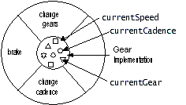
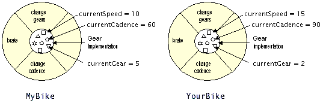
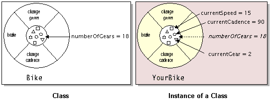

Feedback Form
|
|
Start of Tutorial > Start of Trail > Start of Lesson |
Search
Feedback Form |
In the real world, you often have many objects of the same kind. For example, your bicycle is just one of many bicycles in the world. Using object-oriented terminology, we say that your bicycle object is an instanceof the class of objects known as bicycles. Bicycles have some state (current gear, current cadence, two wheels) and behavior (change gears, brake) in common. However, each bicycle's state is independent of and can be different from that of other bicycles.
When building bicycles, manufacturers take advantage of the fact that bicycles share characteristics, building many bicycles from the same blueprint. It would be very inefficient to produce a new blueprint for every individual bicycle manufactured.
In object-oriented software, it's also possible to have many objects of the same kind that share characteristics: rectangles, employee records, video clips, and so on. Like the bicycle manufacturers, you can take advantage of the fact that objects of the same kind are similar and you can create a blueprint for those objects. A software blueprint for objects is called a class
Definition: A class is a blueprint, or prototype, that defines the variables and the methods common to all objects of a certain kind.The class for our bicycle example would declare the instance variables necessary to contain the current gear, the current cadence, and so on, for each bicycle object. The class would also declare and provide implementations for the instance methods that allow the rider to change gears, brake, and change the pedaling cadence, as shown in the next figure.  After you've created the bicycle class, you can create any number of bicycle objects from the class. When you create an instance of a class, the system allocates enough memory for the object and all its instance variables. Each instance gets its own copy of all the instance variables defined in the class.
 In addition to instance variables, classes can define class variables
 Understanding Instance and Class Membersdiscusses instance variables and methods and class variables and methods in detail.
You probably noticed that the illustrations of objects and classes look very similar. And indeed, the difference between classes and objects is often the source of some confusion. In the real world, it's obvious that classes are not themselves the objects they describe: A blueprint of a bicycle is not a bicycle. However, it's a little more difficult to differentiate classes and objects in software. This is partially because software objects are merely electronic models of real-world objects or abstract concepts in the first place. But it's also because the term "object" is sometimes used to refer to both classes and instances.In the figures, the class is not shaded, because it represents a blueprint of an object rather than an object itself. In comparison, an object is shaded, indicating that the object exists and that you can use it.
|
|
Start of Tutorial > Start of Trail > Start of Lesson |
Search
Feedback Form |